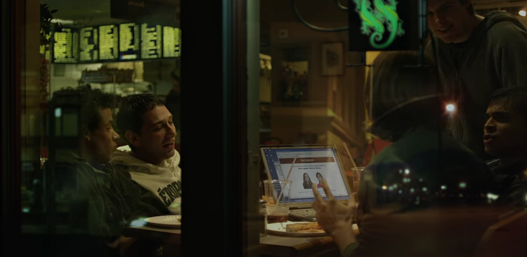
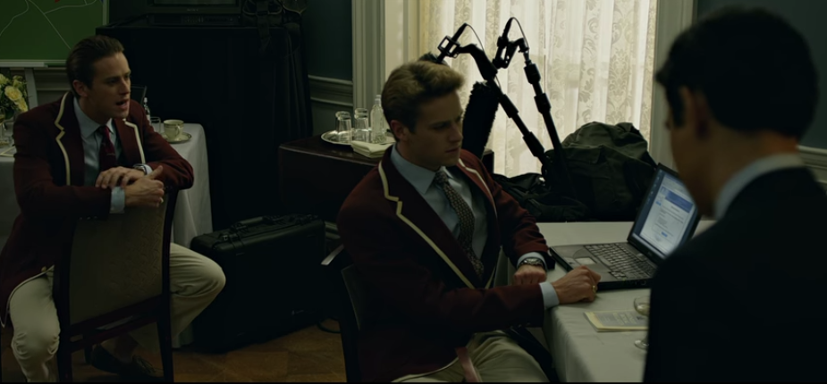

Digital Tools and Skills: Comparing 'Based on True Story' Movies with Their Real Stories
Post 1: Molly's Game
Molly's Game is a biopic about the rise and subsequent fall of Poker Princess, Molly Bloom. Bloom ran one of the most exclusive poker games in the world, filled with celebrities, billionaires, royalty and some mobsters. Based on her memoir Molly's Game
See the actors who played the very real people below!
Molly Bloom
Jessica Chastain played Molly Bloom.
Player X "Tobey Macguire"
Michael Cera played Player X in the movie, widely known to be Tobey Maguire.
"Charlie Jaffrey" Jim Walden
Idris Elba played Charlie Jaffery, who is based off Bloom's real life lawyer, Jim Walden.
We all know that Hollywood can take to dramatising real stories to the point where they're no longer recognisable as fact. But how much of Molly's Game was really real? Let's compare the scenes and see what's factual and what's fictional.
Bloom was arrested in 2013, two years after shutting down her Los Angeles poker games in 2011. She was arrested as part of a money laundering and illegal sports gambling operation in New York.
The home video of Bloom as a teenager was fake. Samantha Isler plays the teen Bloom. Bloom's father did interview his children on their birthdays.
Bloom did take a year off before starting law school, moving to Los Angeles, and working bottle service at a nightclub.
Dean Keith is referred to as Reardon Green in the book, but his actual name is Darin Feinstein.
Keith was an unplesant man to work for and did actually yell at Bloom for buying 'poor people bagels'.
While Player X is never explicitly named in the movie, it is widely believed to be Tobey Maguire.
Keith did want to cut Bloom off after his businesses went badly, leading to Bloom starting her own game from the contacts she made while running his games. In order to keep the game legal, she created her own business and created tax slips for employees.
Bloom did move to New York after being ousted in Los Angeles. The baseball player alluded to in the film was Alex Rodriguez.
Bloom had been running a clean game, but after players failed to pay their debts, she had to resort to taking money from the pot or 'raking', which is illegal.
Bad Brad was Bradley Ruderman, who had been arrested for an unrelated Ponzi scheme. As Ruderman was unable to pay his debts from the scheme, he named Bloom as one receiver of the stolen money. The trustee sued Bloom in an attempt to reclaim the money.
Bloom did admit to having a drug addiction and mental health problems including depression, in her book.
Molly was beat up by a member of the mob. She was introduced to the mob by her driver. When she refused their offer for protection, a man did show up at her door and beat and rob her. She wasn't able to accept their offer as police officers had made multiple mob-related arrests.
It is unknown whether Bloom's lawyer gave an impassioned monologue of her innocence during a meeting with the prosecutors. However, Bloom did refuse to name anyone who played in her game unless otherwise previously named or collect on debts using violence.
It's extremely probable that Bloom never went figure skating while the prosecutors deliberated on their recommended sentencing. It's less likely for her father to show up to talk to her during this time given their tumultuous relationship. They did end up reconciling later on.
Molly's Game was largely factual. Apart for some character changes (i.e. Bloom's lawyer) and some dramatisation (i.e. Bloom skating while waiting for her sentence), the movie did check out. BUT the movie was based on Bloom's self-penned memoir. So while the events may be true in her eyes, they may not be 100% fact.
Post 2: The Social Network
The Social Network shows the rise of Facebook - from it's humble start in a Harvard dorm to attaining it's one millionth user, all while revealing the legal dramas behind its inception. Based on the book The Accidental Billionaires.
See the actors who played the very real people below!
Mark Zuckerberg
Jesse Eisenberg played Mark Zuckerberg.
Eduardo Saverin
Andrew Garfield played Eduardo Saverin.
Sean Parker
Justin Timberlake played Sean Parker.
Cameron and Tyler Winklevosss
Armie Hammer played both Winklevoss twins.
We all know that Hollywood can take to dramatising real stories to the point where they're no longer recognisable as fact. But how much of The Social Network was really real? Let's compare the scenes and see what's factual and what's fictional.
The very first scene shows the catalyst behind Zuckerberg's creation of Facebook - him being dumped by his college girlfriend Erica. However, Erica never existed as he was dating his now-wife, Priscilla Chan.
The idea for Facebook did begin in Zuckerberg's Harvard dorm when he created a 'Who's Hotter' voting site of his Harvard peers called Facemash. He did hack into Harvard student sites for photos, however, unlike the movie portrayal, this took more than a single night.
Saverin is later shown to help Zuckerberg in creating the algorithm to complete the program. This is inaccurate as Saverin didn't play any part in the tech side of the business, only supplying the business end of the future company. Adam D'Angelo was Zuckerberg's best friend and original collaborator.

Facemash was a huge success, reaching 460 students in 4 hours, logging 22,000 votes. Facemash did go down after a few hours, but only after Zuckerberg panicked and shut it down The success did catch the eye of the Winklevoss twins who did connect with Zuckerberg about their HarvardConnection idea.
Zuckerberg is seen meeting Harvard officials about the disruption he and Facemash caused, including hacking into the student sites. He did argue that he had done Harvard a favour by exposing security flaws. It's unknown what his punishment was, if any. In the movie, as Zuckerberg is leaving the Harvard offices, he meets the Winklevoss twins. This didn't happen as they reached out to him by email. They discuss their HarvardConnection idea, where Zuckerberg agrees to be their programmer.
Another deposition scene where the Winklevoss twins accuse Zuckerberg of pretending to work on HarvardConnection while stealing their ideas. In the movie, we see Zuckerberg dodging meeting requests to work on TheFacebook. In the book, Saverin claims the Zuckerberg decided HarvardConnection wasn't worth his time. No mention is made about copying any ideas. Zuckerberg does register the domain name TheFacebook during this time. Zuckerberg eventually contacts the Winklevoss twins, expressing concern that HarvardConnection may not work.
In the future, the Winklevoss twins claim that Zuckerberg studied their system to start TheFacebook and stole parts of their code. Zuckerberg dismisses this claim and argues that their idea was derivative with none of their code appearing in TheFacebook. In actuality, several social networking sites were already gaining popularity, so both TheFacebook and HarvardConnection would have been derivative. It's hard to know if any other code was stolen as there isn't a public copy of both codes available for comparison.
Bill Gates did give a speech to Harvard and Zuckerberg and Saverin were treated as celebrities, being the creators of TheFacebook. Christy is introduced as Saverin's love interest. However, Christy was really Kelly. Back in their dorms, Saverin suggests monetising through advertising. Zuckerberg brushes this suggestion off as he thinks ads aren't cool. In reality, Zuckerberg wasn't interested in making money beyond the costs of running the site. Saverin spots a cease and desist letter from the Winklevoss twins' legal counsel, but Zuckerberg says he's already responded. It's unknown if Zuckerberg did respond, but the Winklevoss twins did send a cease & desist letter after TheFacebook was launched.
Saverin did set up meetings with potential advertisers with Zuckerberg not taking the meetings seriously. However, the ad guys largely didn't "get" the site, leading to a lot of failed meetings.
The first successful meeting was with Parker. It did happen at a bar, but it was Zuckerberg's girlfriend who attended the meeting, not Saverin's. Zuckerberg and Parker were on the same page, especially advertising, annoying Saverin. They did agree to drop the 'The' in 'TheFacebook'.
Zuckerberg did decide to spend the summer in Silicon Valley with Saverin taking a prestigious internship in New York and agreeing to hire two interns. The 'interviews' for the interns involved a coding/drinking competition. Parker did move into the Palo Alto house, soon after becoming the president of Facebook.

The Winklevoss twins did learn that Facebook was in the UK after a rowing competition reception. While they didn't rush to a computer, they did decide a lawsuit was inevitable.
The fight between Christy and Saverin was fictional. While Christy did burn the gifts she received from Saverin, Saverin was on a flight back to New York while it was happening. Saverin did end the relationship at a later point.
Parker did set up an investment meeting with former PayPal CEO, Peter Thiel, who invested $500K. Saverin was not at this meeting. Zuckerberg was upset that Saverin had frozen the accounts. Both of them apologised and tried to smooth things over.
Saverin meets with lawyers to discuss share agreements. The share agreements in the movie were correct, subject to dilution for future investors and staff. Zuckerberg did drop out of Harvard while Saverin went back to school.
Saverin's shares are shown to be diluted to 0.03%. His shares were diluted to below 10%, but not as low as 0.03%. Parker is shown to rile Saverin up by offering him his original investment from his frozen account with Saverin punching him. This never occurred as Parker was never too interested in Saverin to annoy him intentionally.
The settlement details are correct. In 2010, Zuckerberg was the youngest billionaire, with Facebook having over 500 million members.
What's the verdict?
Half true and half fake. The details behind the invention of Facebook are largely true, give or take some minor details about who helped Zuckerberg with the initial coding. However, the biggest dramatisation that occured was with Zuckerberg himself and the fictional Erica. Zuckerberg in the movie is seen to be obsessed with power and women, and this drive caused him to create Facebook at the cost of losing his friends. This is a large departure from reality as Zuckerberg had a long-time girlfriend. Eisenberg's portrayal of Zuckerberg was also highly dramatised as Eisenberg was shown to be quick-witted in public speaking settings, in which Zuckerberg is famously not. The movie was based off of The Accidental Billionaires, which is seen as a true portrayal of Facebook's creation. While the movie did go off book for the sake of drama, the story remains largely true.